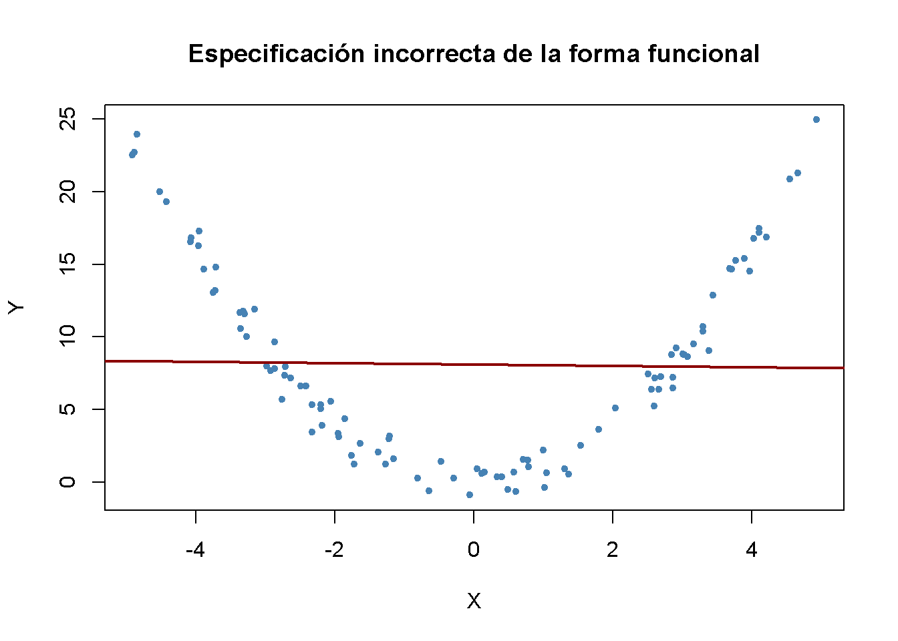
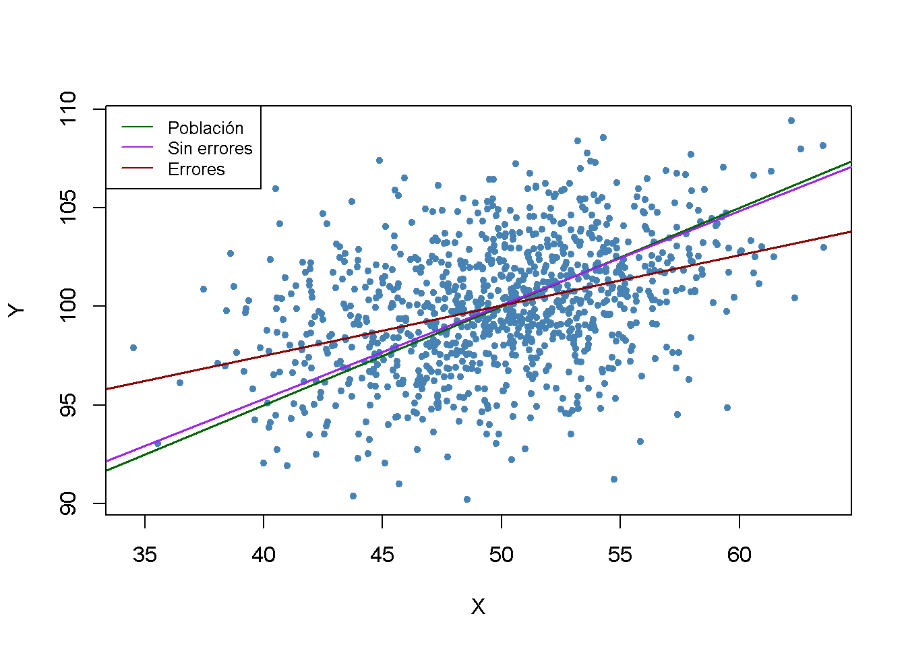
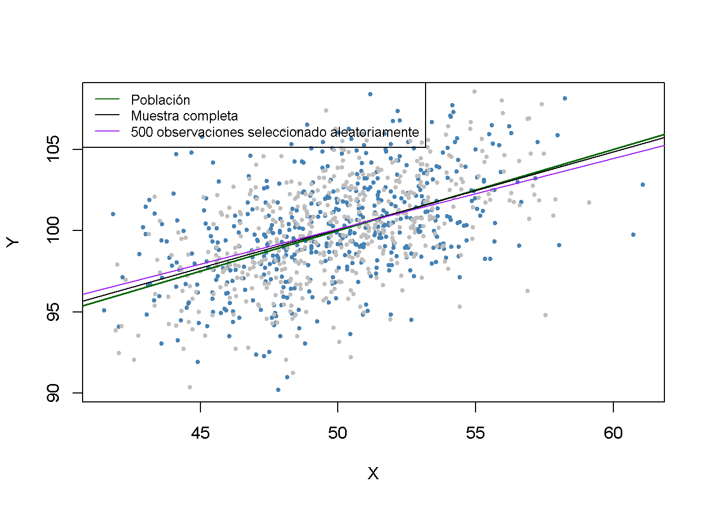
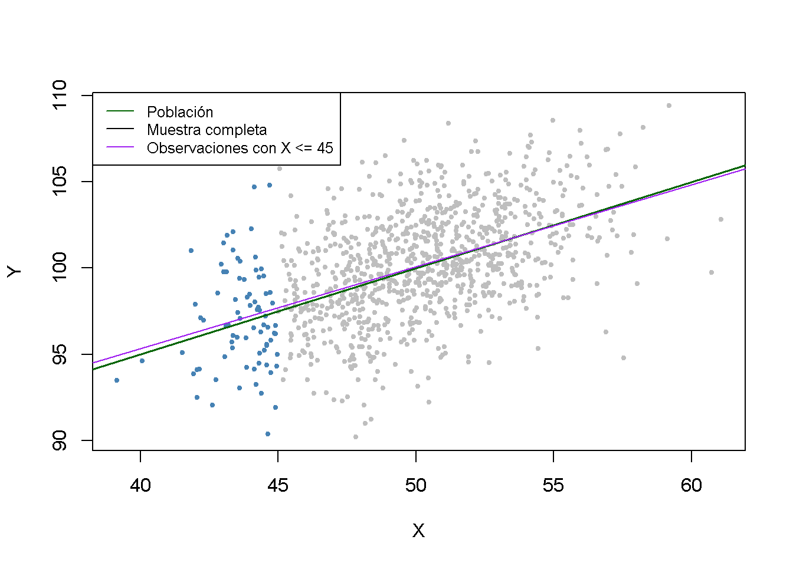
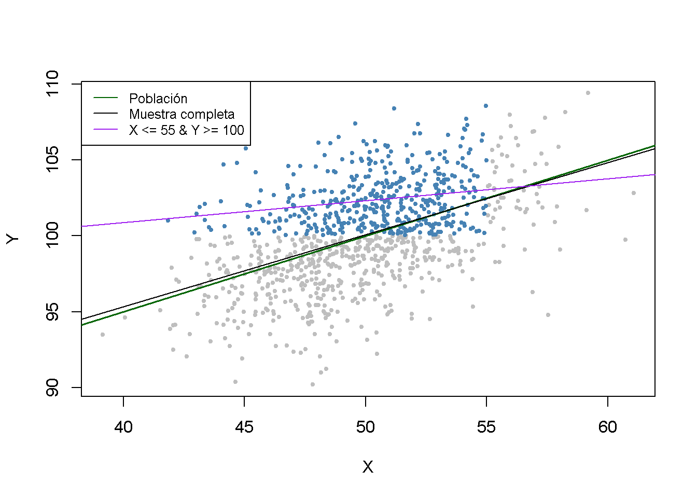
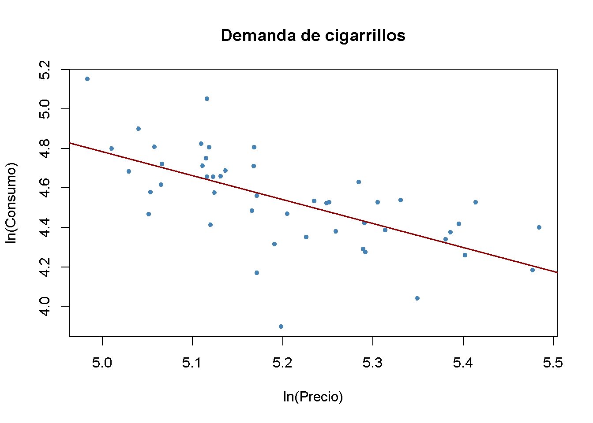

10.2 Amenazas a la validez interna del análisis de regresión múltiple
Esta sección trata cinco fuentes que causan que el estimador de MCO en modelos de regresión (múltiple) sea sesgado e inconsistente para el efecto causal de interés y discute posibles soluciones. Las cinco fuentes implican una violación del primer supuesto de mínimos cuadrados presentado en el Concepto clave 6.4.
Esta sección trata:
Sesgo de variable omitida.
Especificación incorrecta de la forma funcional.
Errores de medición.
Datos faltantes y selección de muestras.
Sesgo de causalidad simultánea.
Además de estas amenazas para la cosistencia del estimador, también se discuten brevemente las causas de la estimación inconsistente de los errores estándar de MCO.
Sesgo de variable omitida
Concepto clave 9.2
Sesgo de variable omitida: ¿Debería incluir más variables en mi regresión?
La inclusión de variables adicionales reduce el riesgo de sesgo de variable omitida, pero puede aumentar la varianza del estimador del coeficiente de interés.
Se presentan algunas pautas que ayudan a decidir si incluir una variable adicional:
- Especificar el o los coeficientes de interés.
- Identificar las fuentes potenciales más importantes de sesgo de variables omitidas utilizando el conocimiento disponible antes de estimar el modelo. Debería terminar con una especificación de referencia y un conjunto de regresores que son cuestionables.
- Utilizar diferentes especificaciones de modelo para probar si los regresores cuestionables tienen coeficientes diferentes de cero.
- Utilizar tablas para proporcionar una divulgación completa de sus resultados; es decir, presentar diferentes especificaciones de modelos que apoyen su argumento y permitan al lector ver el efecto de incluir regresores cuestionables.
A estas alturas, debe conocer el sesgo de variable omitida y sus consecuencias. El Concepto clave 9.2 da algunas pautas sobre cómo proceder si hay variables de control que posiblemente permitan reducir el sesgo de las variables omitidas. Si incluir variables adicionales para mitigar el sesgo no es una opción porque no hay controles adecuados, existen diferentes enfoques para resolver el problema:
Especificación incorrecta de la forma funcional de la función de regresión
Si la función de regresión de la población no es lineal pero la función de regresión es lineal, la forma funcional del modelo de regresión está mal especificada. Esto conduce a un sesgo del estimador MCO.
Concepto clave 9.3
Especificación incorrecta de la forma funcional
Se dice que una regresión adolece de una especificación incorrecta de la forma funcional cuando la forma funcional del modelo de regresión estimado difiere de la forma funcional de la función de regresión poblacional. La especificación incorrecta de la forma funcional conduce a estimadores de coeficientes sesgados e inconsistentes. Una forma de detectar la especificación incorrecta de la forma funcional es trazar la función de regresión estimada y los datos. Esto también puede resultar útil para elegir la forma funcional correcta.
Es fácil encontrar ejemplos de especificación incorrecta de la forma funcional: Considere el caso en el que la función de regresión de la población es \[Y_i = X_i^2\], pero el modelo utilizado es \[Y_i = \beta_0 + \beta_1 X_i + u_i.\] Claramente, la función de regresión está mal especificada aquí. Ahora, simulando y visualizándo los datos.
# sembrar la semilla para la reproducibilidad
set.seed(3)
# simular conjunto de datos
X <- runif(100, -5, 5)
Y <- X^2 + rnorm(100)
# estimar la función de regresión
ms_mod <- lm(Y ~ X)
ms_mod
#>
#> Call:
#> lm(formula = Y ~ X)
#>
#> Coefficients:
#> (Intercept) X
#> 8.11363 -0.04684# graficar los datos
plot(X, Y,
main = "Especificación incorrecta de la forma funcional",
pch = 20,
col = "steelblue")
# graficar la línea de regresión lineal
abline(ms_mod,
col = "darkred",
lwd = 2)
Es evidente que los errores de regresión son relativamente pequeños para observaciones cercanas a \(X = -3\) y \(X = 3\), pero que los errores aumentan para valores de \(X\) más cercanos a cero e incluso más para valores superiores a \(-4\) y \(4\). Las consecuencias son drásticas: La intersección se estima en \(8.1\) y para el parámetro de pendiente se obtiene una estimación obviamente muy cercana a cero. Este problema no desaparece a medida que aumenta el número de observaciones porque la MCO está sesgada y es inconsistente debido a la especificación incorrecta de la función de regresión.
Error de medición y sesgo de errores en variables
Concepto clave 9.4
Errores en sesgo variable
Cuando las variables independientes se miden de manera imprecisa, se habla de sesgo de errores en las variables. Este sesgo no desaparece si el tamaño de la muestra es grande. Si el error de medición tiene media cero y es independiente de la variable afectada, el estimador MCO del coeficiente respectivo está sesgado hacia cero.
Suponga que está midiendo incorrectamente el regresor único \(X_i\), de modo que existe un error de medición y observa \(\overset{\sim}{X}_i\), en lugar de \(X_i\). Entonces, en lugar de estimar la población, el modelo de regresión \[ Y_i = \beta_0 + \beta_1 X_i + u_i \] terminas estimando
\[\begin{align*} Y_i =& \, \beta_0 + \beta_1 \overset{\sim}{X}_i + \underbrace{\beta_1 (X_i - \overset{\sim}{X}_i) + u_i}_{=v_i} \\ Y_i =& \, \beta_0 + \beta_1 \overset{\sim}{X}_i + v_i \end{align*}\]
donde \(\overset{\sim}{X}_i\) y el término de error \(v_i\) están correlacionados. Por lo tanto, MCO estaría sesgado e inconsistente para el verdadero \(\beta_1\) en este ejemplo. Se puede demostrar que la dirección y la fuerza del sesgo dependen de la correlación entre el regresor observado, \(\overset{\sim}{X}_i\), y el error de medición, \(w_i =X_i - \overset{\sim}{X}_i\). Esta correlación, a su vez, depende del tipo de error de medición cometido.
El modelo de error de medición clásico supone que el error de medición, \(w_i\), tiene media cero y que no está correlacionado con la variable, \(X_i\), y el término de error del modelo de regresión poblacional, \(u_i\):
\[\begin{equation} \overset{\sim}{X}_i = X_i + w_i, \ \ \rho_{w_i,u_i}=0, \ \ \rho_{w_i,X_i}=0 \end{equation}\]
Entonces sostiene que:
\[\begin{equation} \widehat{\beta}_1 \xrightarrow{p}{\frac{\sigma_{X}^2}{\sigma_{X}^2 + \sigma_{w}^2}} \beta_1 \tag{10.1} \end{equation}\]
lo que implica una inconsistencia como \(\sigma_{X}^2, \sigma_{w}^2 > 0\), tal que la fracción en (10.1) es menor que \(1\). Se debe tener en cuenta que se deben reconocer dos casos extremos:
Si no existe ningún error de medición, \(\sigma_{w}^2=0\) tal que \(\widehat{\beta}_1 \xrightarrow{p}{\beta_1}\).
Si \(\sigma_{w}^2 \gg \sigma_{X}^2\), se tiene \(\widehat{\beta}_1 \xrightarrow{p}{0}\). Este es el caso si el error de medición es tan grande que esencialmente no hay información sobre \(X\) en los datos que pueda usarse para estimar \(\beta_1\).
La forma más obvia de lidiar con el sesgo de errores en las variables es usar un \(X\) medido con precisión. Si esto no es posible, la regresión de variables instrumentales es una opción. También se podría abordar el problema mediante el uso de un modelo matemático del error de medición y ajustar las estimaciones de manera apropiada: Si es plausible que se aplique el modelo clásico de error de medición y si existe información que se pueda utilizar para estimar la razón en la ecuación (10.1), se podría calcular una estimación que corrija el sesgo a la baja.
Por ejemplo, considere dos variables aleatorias bivariadas distribuidas normalmente \(X, Y\). Es un resultado bien conocido que la función de expectativa condicional de \(Y\) dado \(X\) tiene la forma:
\[\begin{align} E(Y\vert X) = E(Y) + \rho_{X,Y} \frac{\sigma_{Y}}{\sigma_{X}}\left[X-E(X)\right]. \tag{10.2} \end{align}\] Thus for \[\begin{align} (X, Y) \sim \mathcal{N}\left[\begin{pmatrix}50\\ 100\end{pmatrix},\begin{pmatrix}10 & 5 \\ 5 & 10 \end{pmatrix}\right] \tag{10.3} \end{align}\] de acuerdo con (10.2), la función de regresión poblacional es \[\begin{align*} Y_i =& \, 100 + 0.5 (X_i - 50) \\ =& \, 75 + 0.5 X_i. \tag{10.4} \end{align*}\]
Ahora suponga que recopila datos sobre \(X\) y \(Y\), pero que solo puede medir \(\overset{\sim}{X_i} = X_i + w_i\) con \(w_i \overset{i.i.d.}{\sim} \mathcal{N}(0,10)\). Dado que \(w_i\) son independientes de \(X_i\), no hay correlación entre \(X_i\) y \(w_i\), por lo que se tiene un caso del modelo clásico de error de medición. Ahora se ilustra este ejemplo en R usando el paquete mvtnorm (Genz et al. 2020).
# sembrar semilla
set.seed(1)
# cargar el paquete 'mvtnorm' y simular datos normales bivariados
library(mvtnorm)
dat <- data.frame(
rmvnorm(1000, c(50, 100),
sigma = cbind(c(10, 5), c(5, 10))))
# establecer nombres de columnas
colnames(dat) <- c("X", "Y")Ahora se estima una regresión lineal simple de \(Y\) en \(X\) usando estos datos de muestra y se vuelve a ejecutar la misma regresión, pero esta vez se agregan i.i.d. \(\mathcal{N}(0,10)\) errores agregados a \(X\).
# estimar el modelo (sin error de medición)
noerror_mod <- lm(Y ~ X, data = dat)
# estimar el modelo (con error de medición en X)
dat$X <- dat$X + rnorm(n = 1000, sd = sqrt(10))
error_mod <- lm(Y ~ X, data = dat)
# imprimir los coeficientes estimados en la consola
noerror_mod$coefficients
#> (Intercept) X
#> 76.3002047 0.4755264
error_mod$coefficients
#> (Intercept) X
#> 87.276004 0.255212A continuación, se visualizan los resultados y se comparan con la función de regresión poblacional.
# graficar datos de muestra
plot(dat$X, dat$Y,
pch = 20,
col = "steelblue",
xlab = "X",
ylab = "Y")
# agregar función de regresión poblacional
abline(coef = c(75, 0.5),
col = "darkgreen",
lwd = 1.5)
# agregar funciones de regresión estimadas
abline(noerror_mod,
col = "purple",
lwd = 1.5)
abline(error_mod,
col = "darkred",
lwd = 1.5)
# agregar leyenda
legend("topleft",
bg = "transparent",
cex = 0.8,
lty = 1,
col = c("darkgreen", "purple", "darkred"),
legend = c("Población","Sin errores","Errores"))
En la situación sin error de medición, la función de regresión estimada está cerca de la función de regresión de la población. Las cosas son diferentes cuando se usa el regresor mal medido \(X\): Tanto la estimación de la intersección como la estimación del coeficiente en \(X\) difieren considerablemente de los resultados obtenidos usando los datos “limpios” en \(X\). En particular \(\widehat{\beta}_1 = 0.255\), por lo que existe un sesgo a la baja. Se está en una situación cómoda para conocer \(\sigma_X^2\) y \(\sigma^2_w\). Lo anterior permite corregir el sesgo usando (10.1). Con esta información se obtiene la estimación con corrección sesgada \[\frac{\sigma_X^2 + \sigma_w^2}{\sigma_X^2} \cdot \widehat{\beta}_1 = \frac{10+10}{10} \cdot 0.255 = 0.51\] que está bastante cerca de \(\beta_1=0.5\), el verdadero coeficiente de la función de regresión poblacional.
Se debe tener en cuenta que el análisis anterior utiliza una sola muestra. Por tanto, se puede argumentar que los resultados son solo una coincidencia. ¿Se puede demostrar lo contrario utilizando un estudio de simulación?
Selección de muestra y datos faltantes
Concepto clave 9.5
Sesgo de selección de muestra
Cuando el proceso de muestreo influye en la disponibilidad de datos y cuando existe una relación de este proceso de muestreo con la variable dependiente que va más allá de la dependencia de los regresores, se dice que existe un sesgo de selección de la muestra. Este sesgo se debe a la correlación entre uno o más regresores y el término de error. La selección de la muestra implica tanto sesgo como inconsistencia del estimador MCO.
Existen tres casos de selección de muestras. Solo uno de ellos representa una amenaza para la validez interna de un estudio de regresión. Los tres casos son:
Faltan datos al azar.
Faltan datos basados en el valor de un regresor.
Faltan datos debido a un proceso de selección relacionado con la variable dependiente.
Volviendo al ejemplo de las variables \(X\) y \(Y\) distribuidas como se indica en la ecuación (10.3) y se ilustran los tres casos usando R.
Si faltan datos al azar, esto no es más que perder observaciones. Por ejemplo, perder \(50\%\) de la muestra sería lo mismo que no haber visto nunca la mitad (elegida al azar) de la muestra observada. Por lo tanto, los datos faltantes no introducen un sesgo de estimación y “solo” conducen a estimadores menos eficientes.
# sembrar semilla
set.seed(1)
# simular datos
dat <- data.frame(
rmvnorm(1000, c(50, 100),
sigma = cbind(c(10, 5), c(5, 10))))
colnames(dat) <- c("X", "Y")
# marcar 500 observaciones seleccionadas al azar
id <- sample(1:1000, size = 500)
plot(dat$X[-id],
dat$Y[-id],
col = "steelblue",
pch = 20,
cex = 0.8,
xlab = "X",
ylab = "Y")
points(dat$X[id],
dat$Y[id],
cex = 0.8,
col = "gray",
pch = 20)
# agregar la función de regresión poblacional
abline(coef = c(75, 0.5),
col = "darkgreen",
lwd = 1.5)
# agregar la función de regresión estimada para la muestra completa
abline(noerror_mod)
# estimar el caso del modelo 1 y agregar la línea de regresión
dat <- dat[-id, ]
c1_mod <- lm(dat$Y ~ dat$X, data = dat)
abline(c1_mod, col = "purple")
# agrega una leyenda
legend("topleft",
lty = 1,
bg = "transparent",
cex = 0.8,
col = c("darkgreen", "black", "purple"),
legend = c("Población","Muestra completa","500 observaciones seleccionado aleatoriamente"))
Los puntos grises representan las observaciones descartadas de \(500\). Cuando se utilizan las observaciones restantes, los resultados de la estimación se desvían solo marginalmente de los resultados obtenidos con la muestra completa.
La selección de datos aleatoriamente basada en el valor de un regresor también tiene el efecto de reducir el tamaño de la muestra y no introduce sesgo de estimación. Ahora se descartan todas las observaciones con \(X > 45\), se estimará el modelo nuevamente y se comparará.
# establecer semilla aleatoria
set.seed(1)
# simular datos
dat <- data.frame(
rmvnorm(1000, c(50, 100),
sigma = cbind(c(10, 5), c(5, 10))))
colnames(dat) <- c("X", "Y")
# marcar observaciones
id <- dat$X >= 45
plot(dat$X[-id],
dat$Y[-id],
col = "steelblue",
cex = 0.8,
pch = 20,
xlab = "X",
ylab = "Y")
points(dat$X[id],
dat$Y[id],
col = "gray",
cex = 0.8,
pch = 20)
# agregar función de regresión poblacional
abline(coef = c(75, 0.5),
col = "darkgreen",
lwd = 1.5)
# agregar la función de regresión estimada para la muestra completa
abline(noerror_mod)
# estimar el caso del modelo 1, agregar la línea de regresión
dat <- dat[-id, ]
c2_mod <- lm(dat$Y ~ dat$X, data = dat)
abline(c2_mod, col = "purple")
# agregar leyenda
legend("topleft",
lty = 1,
bg = "transparent",
cex = 0.8,
col = c("darkgreen", "black", "purple"),
legend = c("Población","Muestra completa","Observaciones con X <= 45"))
Tenga en cuenta que, aunque se redujeron todas las observaciones en más del \(90\%\), la función de regresión estimada está muy cerca de la línea estimada basada en la muestra completa.
En el tercer caso, se enfrenta a un sesgo de selección de la muestra. Se puede ilustrar esto usando solo observaciones con \(X_i < 55\) y \(Y_i > 100\). Estas observaciones se identifican fácilmente usando la función which() y los operadores lógicos: which (dat $ X <55 & dat $ Y> 100)
# establecer semilla aleatoria
set.seed(1)
# simular datos
dat <- data.frame(
rmvnorm(1000, c(50,100),
sigma = cbind(c(10,5), c(5,10))))
colnames(dat) <- c("X","Y")
# marcar observaciones
id <- which(dat$X <= 55 & dat$Y >= 100)
plot(dat$X[-id],
dat$Y[-id],
col = "gray",
cex = 0.8,
pch = 20,
xlab = "X",
ylab = "Y")
points(dat$X[id],
dat$Y[id],
col = "steelblue",
cex = 0.8,
pch = 20)
# agregar función de regresión poblacional
abline(coef = c(75, 0.5),
col = "darkgreen",
lwd = 1.5)
# agregar la función de regresión estimada para la muestra completa
abline(noerror_mod)
# estimar el caso del modelo 1, agregar la línea de regresión
dat <- dat[id, ]
c3_mod <- lm(dat$Y ~ dat$X, data = dat)
abline(c3_mod, col = "purple")
# agregar leyenda
legend("topleft",
lty = 1,
bg = "transparent",
cex = 0.8,
col = c("darkgreen", "black", "purple"),
legend = c("Población", "Muestra completa", "X <= 55 & Y >= 100"))
Se puede ver que el proceso de selección conduce a resultados de estimación sesgados.
Existen métodos que permiten corregir el sesgo de selección de la muestra. Sin embargo, estos métodos están más allá del alcance del presente curso y, por lo tanto, no se consideran aquí. El concepto de sesgo de selección de la muestra se resume en el Concepto clave 9.5.
Causalidad simultánea
Concepto clave 9.6
Sesgo de causalidad simultáneo
Hasta ahora se ha asumido que los cambios en la variable independiente \(X\) son responsables de los cambios en la variable dependiente \(Y\). Cuando lo contrario también es cierto, se dice que existe causalidad simultánea entre \(X\) y \(Y\). Esta causalidad inversa conduce a una correlación entre \(X\) y el error en la regresión poblacional de interés, de modo que el coeficiente de \(X\) se estima con sesgo.
Suponga que se está interesado en estimar el efecto de un aumento de \(20\%\) en los precios de los cigarrillos sobre el consumo de cigarrillos en los Estados Unidos utilizando un modelo de regresión múltiple. Esto se puede investigar utilizando el conjunto de datos CigarettesSW que es parte del paquete AER. CigarettesSW es un conjunto de datos de panel sobre el consumo de cigarrillos para los 48 estados federales continentales de EE. UU. desde 1985-1995 y proporciona datos sobre indicadores económicos y precios locales promedio, impuestos y consumo de paquetes per cápita.
Después de cargar el conjunto de datos, se seleccionan observaciones para el año 1995 y se trazan los logaritmos del precio por paquete, price, contra el consumo del paquete, packs, y se estima un modelo de regresión lineal simple.
# cargar el conjunto de datos
library(AER)
data("CigarettesSW")
c1995 <- subset(CigarettesSW, year == "1995")
# estimar el modelo
cigcon_mod <- lm(log(packs) ~ log(price), data = c1995)
cigcon_mod
#>
#> Call:
#> lm(formula = log(packs) ~ log(price), data = c1995)
#>
#> Coefficients:
#> (Intercept) log(price)
#> 10.850 -1.213# trazar la línea de regresión estimada y los datos
plot(log(c1995$price), log(c1995$packs),
xlab = "ln(Precio)",
ylab = "ln(Consumo)",
main = "Demanda de cigarrillos",
pch = 20,
col = "steelblue")
abline(cigcon_mod,
col = "darkred",
lwd = 1.5)
Recuerde del Capítulo 9 que, debido a la especificación log-log, en la regresión poblacional el coeficiente del logaritmo del precio se interpreta como la elasticidad precio del consumo. El coeficiente estimado sugiere que un aumento de \(1\%\) en los precios de los cigarrillos reduce el consumo de cigarrillos en aproximadamente \(1.2\%\), en promedio. ¿Se ha estimado una curva de demanda? La respuesta es no: Este es un ejemplo clásico de causalidad simultánea, ver Concepto clave 9.6. Las observaciones son equilibrios de mercado que están determinados tanto por cambios en la oferta como por cambios en la demanda. Por lo tanto, el precio está correlacionado con el término de error y el estimador de MCO está sesgado. No se puede estimar una curva de oferta ni de demanda de manera consistente utilizando este enfoque.
Se volverá a este tema en el Capítulo 13 que trata la regresión de variables instrumentales, un enfoque que permite una estimación consistente cuando hay causalidad simultánea.
Fuentes de inconsistencia de errores estándar de MCO
Existen dos amenazas centrales para el cálculo de errores estándar consistentes de MCO:
Heteroscedasticidad: Las implicaciones de la heterocedasticidad se han discutido en el Capítulo 6. Los errores estándar robustos a la heterocedasticidad calculados por la función vcovHC() del paquete sandwich producen errores estándar válidos bajo heterocedasticidad.
Correlación en serie: Si el error de regresión de la población está correlacionado entre las observaciones, se tiene una correlación en serie. Esto sucede a menudo en aplicaciones en las que se utilizan observaciones repetidas; por ejemplo, en estudios de datos de panel. En cuanto a la heterocedasticidad, vcovHC() se puede utilizar para obtener errores estándar válidos cuando existe correlación serial.
Los errores estándar inconsistentes producirán pruebas de hipótesis no válidas e intervalos de confianza incorrectos. Por ejemplo, cuando se prueba el valor nulo de que algún coeficiente del modelo es cero, ya no se puede confiar en el resultado porque la prueba puede no tener un tamaño de \(5\%\) debido al error estándar calculado incorrectamente.
El Concepto clave 9.7 resume todas las amenazas a la validez interna discutidas anteriormente.
Concepto clave 9.7
Amenazas a la validez interna de un estudio de regresión
Las cinco amenazas principales a la validez interna de un estudio de regresión múltiple son:
- Variables omitidas.
- Especificación incorrecta de la forma funcional.
- Errores en las variables (errores de medición en los regresores).
- Selección de muestras.
- Causalidad simultánea.
Todas estas amenazas conducen al fracaso del primer supuesto de mínimos cuadrados \[E(u_i\vert X_{1i},\dots ,X_{ki}) \neq 0\] de modo que el estimador de MCO está sesgado y es inconsistente.
Además, si uno no ajusta por heterocedasticidad y/o correlación serial, los errores estándar incorrectos pueden ser una amenaza para la validez interna del estudio.